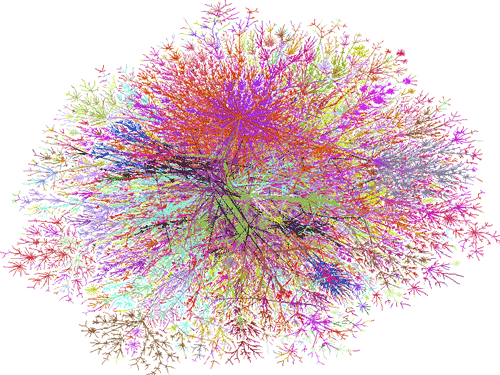
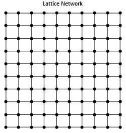
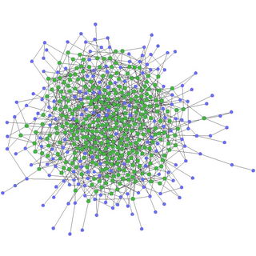
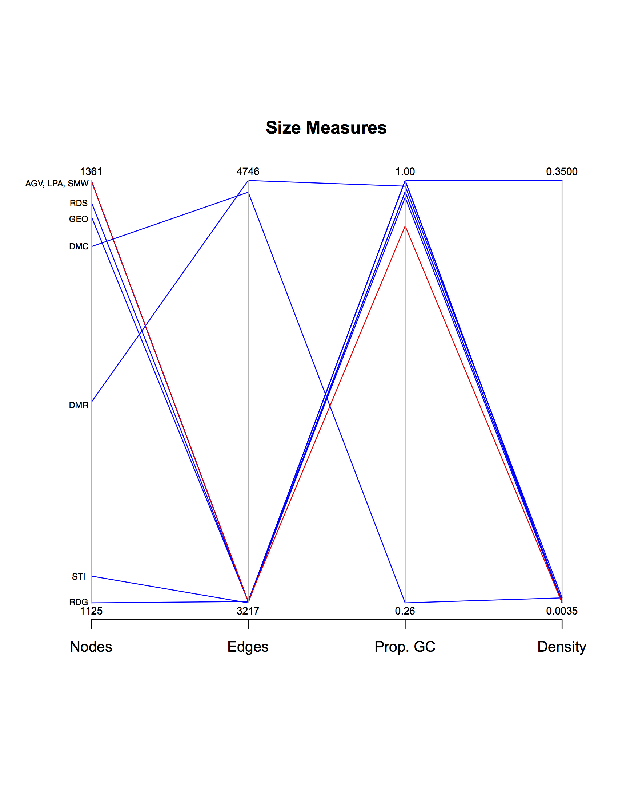
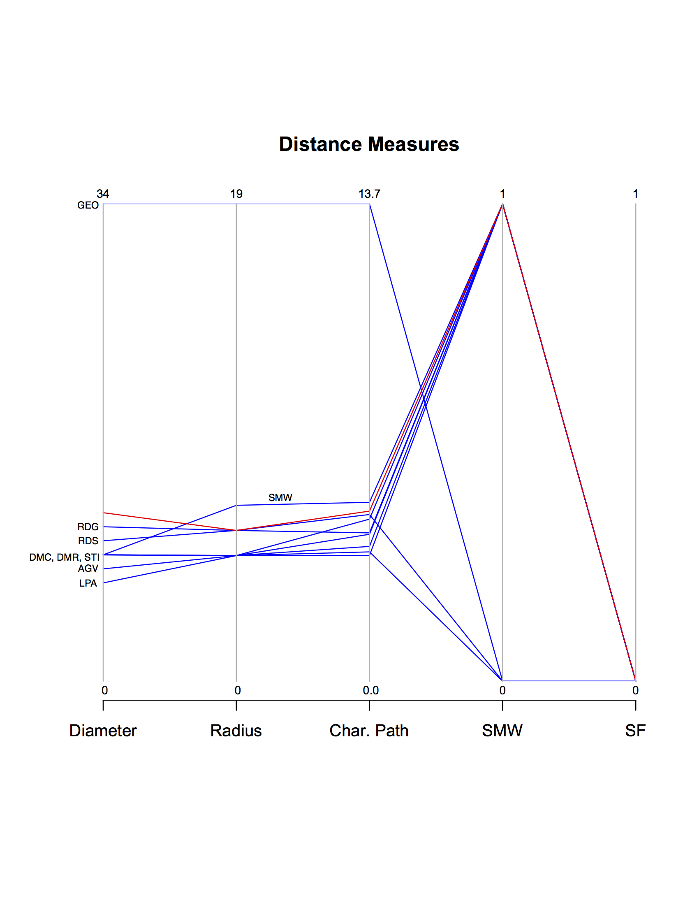
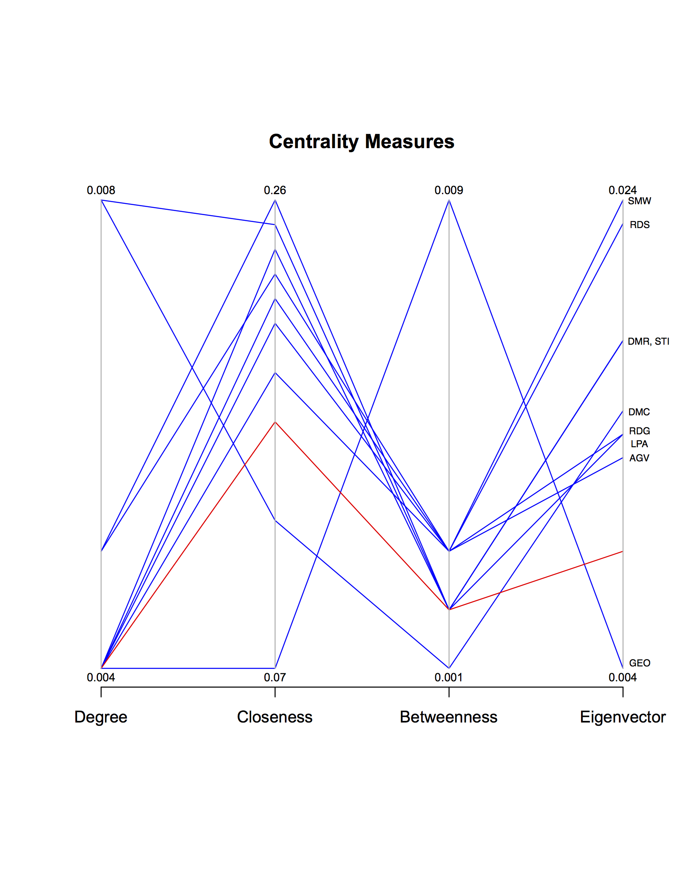
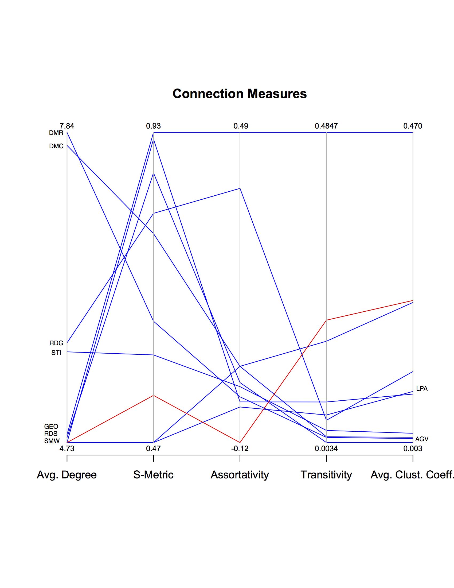
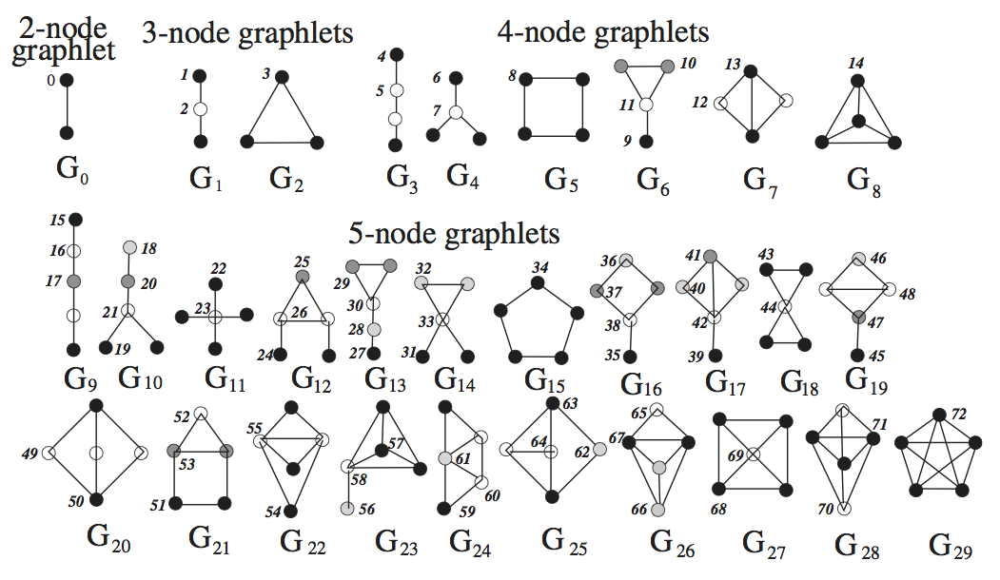
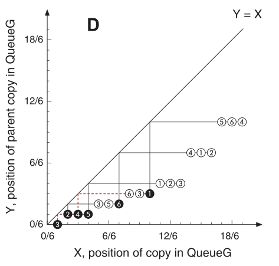
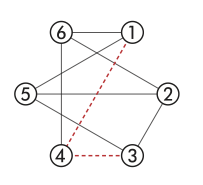

Algorithmic Approaches to Biological Network Classification
Margaret Justice Bray
Department of Biostatistics and Bioinformatics
Rollins School of Public Health
Emory University
Atlanta, GA 30322
May 7, 2015
What is a Network?
A diagrammatic representation of a system consisting of nodes (vertices) joined by links (edges). Nodes represent system entitites and edges represent a particular type of interconnection between pairs of nodes (Estrada 2011).
Complex Networks
Complex networks have nontrivial topological features that are not found in lattices or random graphs.



Empirical Networks
A network formed through observation of any real-world phenomena.
Computer Networks
World Wide Web
Internet
Routers
Social and Public Health Netowkrs
Friendships
Sexual Relationships
Twitter Followings
Biological and Molecular Networks
Food web
Metabolic
Protein-protein interactions
Neurological
Model Graphs
A network not based directly on any real-world system,
though potentially motivated by one.
These are built by following a prescribed algorithm, also referred to
as a growth mechanism.
Model networks are either growing or static.
What does it Mean to Classify a Network?
To determine which model graph most closely mimics the empirical network under investigation based upon some predefined set of features.
Why is network classification beneficial?
Increase understanding of the phenomena being modeled
Structure dictates functions
Predict missing interactions
Guide future experiments
Motivating Problem
Find the most accurate classification algorithm for simple organism PPI networks.
Identify interactions that are missing in patients with protein diseases
Earlier diagnoses
Identify orthologous protein
Explore evolutionary process
Determine PPI network for complex organisms
Questions to Answer
Are the choices of model graphs appropriate?
What methods exist for network classification?
How do these methods perform?
Accuracy? Runtime? Scaleability?
Data
Protein-Protein Interaction (PPI) Network
Protein-Protein Interaction: "Physical contacts with molecular docking proteins that occur in a cell or in a living organism in vivo.'' (De Las Rivas 2010)
PPI Network: A network formed using known protein-protein interactions. The proteins are nodes and interactions are edges.
Dataset
Saccharomyces cerevisiae PPI Network
High-throughput dataset acquired from DIP Database
Created through tandem-affinity purification (TAP) and mass spectrometry
by Gavin et. al (2002)
High efficiency, sensitivity, and specificity
1361 proteins (nodes)
3222 interactions (edges)
No self-loops or lone nodes
Model Graphs
Aging Vertex
AGV
Growing
Duplication-Mutation
DMC
Growing
-Complementation
Duplication-Mutation with
DMR
Growing
Random Mutation
3D Geometric
GEO
Static
Linear Preferential Attachment
LPA
Growing
Random Growing
RDG
Growing
Random Static
RDS
Static
Small-World
SMW
Static
Stickiness Index
STICKY
Growing
Are the choices of model graphs appropriate?
Model Graph Simulations
Methods
1000 networks of each type
AGV, DMC, DMR, LPA, RDG, RDS, and SMW from Middendorf
(2005) source code
GEO and STICKY from GraphCrunch
Required input values, i.e. number of nodes, edges, etc, based off
of S. cerevisiae PPI network values
Lone nodes were eliminated
Consistent across literature
Graph Measures
Methods
18 measures considered
4 categories of measures
size, distance, centrality, connection
Median values calculated over 1000 model graphs of each type
Values considered match if within $\pm 5\%$ of the empirical value
Size Measures
Results

Distance Measures
Results

Centrality Measures
Results

Connection Measures
Results

Graph Matches Stratified by Measure Category
Size: 53%
Distance: 22%
Centrality: 19%
Connection: 13%
Conclusions
None of the model types are a perfect match
AGV and LPA both matched 8 measures (44%)
May be necessary to prioritize measures for matching
What methods exist for network classification?
Classification Method Overview
Essentially infinite possibilities
4 classification methods considered
Local properties
Relative Graphlet Frequency (RGF)
Graphlet Degree Distribution (GDD)
Global properties
Characteristic Curve (CC)
Degree Distribution Distance (DDD)
Graphlets and Automorphism Orbits

"Biological network comparison using graphlet degree distribution." Natasa Przulj, Bioinformatics, 23(2):e177–83, Jan 2007., Fig. 1
Software tool for network modeling, alignment, clustering
Created by researchers at Imperial College London
Oleksii Kuchaiev, Aleksandar Stevanovic, Wayne Hayes, Natasa Przulj
Version 2.1 utilized
Characteristic Curve


"A Curve Shaped Description of Large Networks, with an Application to the Evaluation of Network Models" Xianchuang Su et al., PLoS ONE, 6(5):e19784, May 2011., Fig. 1